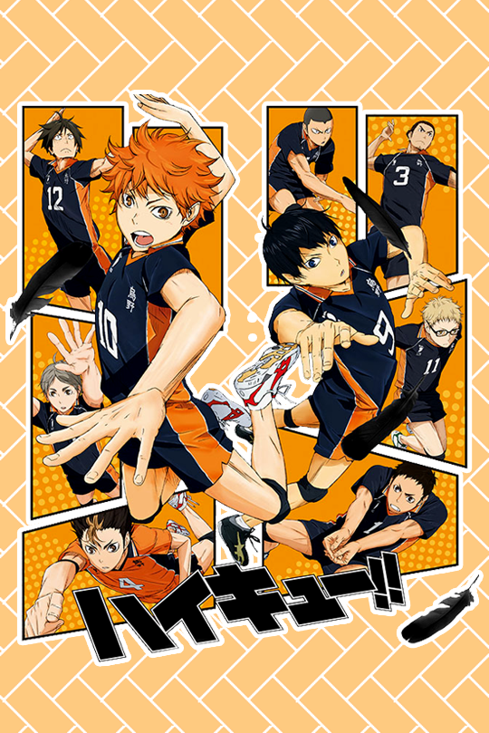

Mon Premier Site
Mes Hobbies
Le Volley-Ball
J'ai découvert ce sport grâce à un animé nommé Haikyuu. Cet animé de volley-ball a, je ne saurais pas vraiment expliqué pourquoi, sû créer chez moi une certaine vocation. N'ayant même pas regardé l'intégralié des épisodes, j'ai tout de suite accroché à ce sport que je ne connaissait que vaguement. Puis Vidéos après Vidéos, épisodes après épisodes, j'ai commencé à vraiment prendre goût au Volley.
Après quelques semaine passé à cogiter, je me suis enfin mis m'entraîner. Entraînement après entraînement, je commençais petit à petit à assimiler les bases du sport. D'aileurs, comme par hasard, arrivé en seconde, le premier sport abbordé en EPS fût le Volley-Ball. Depuis la seconde, je continue encore à m'entrainer pour essayer peut être un jour de devenir un volleyeur expérimenté...
J'ai découvert récemment le monde du développement web grâce à une rencontre qui m'a été plus qu'utile (merci Elyssa ;). Depuis ce jour, une vraie envie est survenue, surtout celle de créer mon tout premier site web !
Je commençai donc, petit à petit à m'intéresser et surtout à apprendre les bases du développement web (grâce à la formation De Pierre Giraud, un incroyable professeur).
Le Développement Web